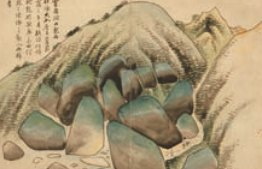
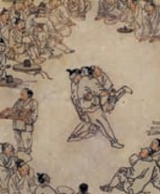
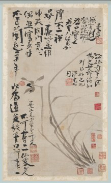
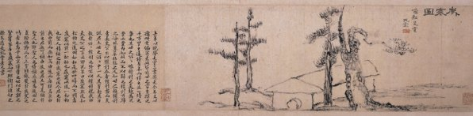

모내기법의 확산, 상품화폐경제와 신분제의 동요
양난 이후 농촌 황폐화와 노동력 부족을 타개하기 위해 확산된 모내기법과 견종법·광작, 토지 중심으로 재편된 영정법·대동법·균역법, 공인·신해통공·민간 거상(송상·만상·내상·유상·경강상인)·대외 무역(개시·후시)과 선대제 수공업·덕대 광업·상평통보와 전황, 공명첩·단성 호적 대장·향전·서얼 허통과 중인 통청 운동·공노비 해방으로 이어진 신분제 해체, 그리고 17세기 전란 복구기부터 18세기 영·정조 전성기와 19세기 전반에서 중·후반까지에 걸친 건축·도자기·서민 문화·회화·국학의 연대기적 변천을 인과관계로 규명합니다.
1. 조선 후기 농업·수공업·광업의 대변혁과 수취 개편·상품 화폐 경제
앞선 제4편 제3장과 제5편 제1장에서 살펴본 임진왜란과 병자호란 양난으로 전 국토의 3분의 2가 황폐해지고 농촌 인구와 수조지가 급감하자, 조선의 농민과 국가는 생존과 재정 재건이라는 절박한 위기에 직면하였습니다. 일손이 극도로 모자란 농촌에서는 적은 노동력으로 더 많은 곡식을 거두어들이는 것이 최우선 과제였고, 그 필연적 해법으로 논농사에서 모내기법(이앙법)이 전국으로 확산되고 밭농사에서 이랑 위(농종법)가 아니라 바람이 통하고 습기가 보존되는 고랑에 씨를 뿌리는 견종법이 널리 보급되었습니다. 조선 전기에는 봄 가뭄이 들면 한 해 농사를 통째로 망칠 위험 때문에 국가가 법으로 모내기법을 금지하고 직파법 중심의 『농사직설』을 보급했으나, 조선 후기에 농민과 지주들이 저수지(보·제언) 등 수리 시설을 대대적으로 확충하고 효종 때 공주목사 신속이 기존 농서에 민간 농법을 보태어 편찬한 종합 농서 『농가집성』(1655년)이 보급되면서 남부 지방에서 전국으로 급속히 퍼져나갔습니다. 못자리에서 기른 모를 본논에 옮겨 심는 모내기법은 직파법에 비해 잡초를 뽑는 김매기 노동력을 5분의 1 수준으로 대폭 절감시켰을 뿐만 아니라, 가을에 벼를 수확한 뒤 그 논에 곧바로 보리를 심는 벼와 보리의 이모작을 가능하게 하여 단위 면적당 생산량을 비약적으로 끌어올렸습니다. 김매기 일손이 획기적으로 줄어들자 한 가구의 노동력만으로도 과거보다 몇 배나 넓은 논을 경작하는 광작이 유행하였는데, 이는 농촌 사회에 극심한 계층 분화(양극화)를 불러왔습니다. 자본력을 갖추어 소작지를 넓히고 시장을 겨냥해 영농하는 소수 농민은 경영형 부농(서민 지주)으로 성장한 반면, 부농들에게 소작지를 빼앗긴 대다수 영세 농민은 땅을 잃고 농촌의 품팔이꾼(고지)이나 도시·광산의 임노동자, 상공업자, 화전민으로 전락하였기 때문입니다.
도시 인구가 늘어나고 장시가 번성하자 농민들은 자급자족용 곡물 대신 시장에 내다 팔아 곧바로 현금을 손에 쥘 수 있는 인삼, 담배, 면화(목화), 약초, 고추, 도성 주변 채소 등 상품 작물을 활발히 재배하였습니다. 소작농이 지주에게 소작료(지대)를 내는 방식에서도 큰 변화가 나타나, 풍흉에 따라 수확량의 절반을 나누고 지주의 간섭이 심했던 정률 지대 타조법(병작반수)에서 벗어나, 풍흉과 관계없이 미리 계약한 일정 액수를 곡물이나 동전으로 납부하는 정액 지대 도조법이 확산되었습니다. 도조법 아래에서는 생산량을 늘릴수록 초과 이익이 소작농의 몫으로 돌아갔기 때문에 농민의 영농 의욕과 지위가 크게 높아졌으며, 소작권을 사고팔 수 있는 영구 경작권인 도지권 관행과 소작료 인하를 요구하는 항조 운동도 성장하였습니다. 한편 양난 이후 토지 대장이 불타고 백성이 유망하여 재정 기반이 무너진 국가 역시 조세 제도를 전면 개편하지 않으면 나라를 유지할 수 없는 절박한 상황에서, 17세기 초 광해군 대부터 18세기 영조 대까지 3대 세목(전세·공납·군역)을 모두 토지 보유 중심으로 개편하였습니다. 첫째, 가장 폐단이 극심했던 특산물 세금인 공납은 관리와 상인이 결탁해 물품을 대신 바치고 농민에게 수십 배의 폭리를 뜯어내는 방납의 폐단을 뿌리 뽑고자, 광해군 때(1608년) 이원익의 건의로 경기도에서 선혜청을 두어 처음 시행하고 직전 단원에서 본 숙종 때(1708년) 황해도까지 확대한 대동법을 실시하였습니다(단, 국경 방어와 사신 접대 경비를 현지에 남겨 쓰는 잉류 지역인 평안도·함경도와 제주도는 제외). 대동법은 부과 기준을 집집마다(가호)에서 '토지 결수'로 전환하여 토지 1결당 쌀 12두(삼베·무명·동전 납부 가능)를 거둠으로써 토지 없는 빈농의 부담을 크게 덜어주고 지주의 부담을 늘렸습니다(왕실과 관청에 바치는 별공·진상은 그대로 존속). 둘째, 토지세인 전세는 인조 때 풍흉에 관계없이 토지 1결당 쌀 4두에서 6두로 세율을 영구히 고정하는 영정법(1635년)을 시행하여 세종 때의 연분9등법을 사실상 폐지하였습니다. 셋째, 앞 단원에서 살펴본 영조는 양인 장정에게 가혹하게 부과되던 군포 부담을 덜어주고자 1750년 군포를 1년 2필에서 1필로 절반 감축하는 균역법을 단행하고, 부족해진 국방 재정은 지주에게 결작(토지 1결당 쌀 2두 또는 동전 5전)을 부과하고 부유한 상민에게 선무군관포(연 1필)를 거두며 권세가가 독점하던 어염선세(어장·소금·선박세)를 균역청으로 귀속시켜 메웠습니다(다만 양반에게는 끝내 군포를 부과하지 못하여 훗날 흥선대원군 호포제의 과제로 남음).
| 개편 법제 | 대상 세목 (시행 왕) | 핵심 개편 내용 및 부과 기준 | 경제 · 사회적 결과 및 실전 출제 포인트 |
|---|---|---|---|
| 1. 대동법 (1608년부터 1708년까지) |
공납 (특산물) (광해군 경기도 시작 ➔ 숙종 전국 확대) |
방납의 폐단 시정 위해 가호(집) 대신 '토지 결수' 기준으로 전환, 토지 1결당 쌀 12두(삼베·무명·동전 가능) 징수 (선혜청 관할) | 토지 없는 빈농 부담 경감 및 지주 부담 증가(평안·함경 잉류 지역 및 제주 제외, 별공·진상 존속), 관청 물품 조달 상인 공인 등장 ➔ 상품화폐경제의 최대 기폭제 |
| 2. 영정법 (1635년) |
전세 (토지세) (인조) |
풍흉에 관계없이 토지 1결당 쌀 4두에서 6두로 전세율을 영구히 고정 (세종 연분9등법 사실상 폐지) | 전세율은 낮아졌으나 토지를 가진 지주에게만 유리하고, 삼수미 등 각종 부가세와 지주의 세금 전가로 소작농 부담은 여전함 |
| 3. 균역법 (1750년) |
군역 (군포) (영조) |
양인 장정이 내던 군포를 1년 2필에서 1필로 절반 감축 (균역청 설치) | 부족한 재정을 메우기 위해 지주에게 결작(토지 1결당 쌀 2두), 부유한 상민에게 선무군관포(1필), 어염선세 징수 (양반에게는 끝내 군포 미부과) |
대동법의 전국적 확대는 단순한 세금 개혁을 넘어 조선 후기 상품화폐경제와 상공업을 폭발시킨 최대의 기폭제가 되었습니다. 국가가 현물 특산물 대신 쌀·무명·동전으로 공납을 걷게 되자, 선혜청으로부터 대동미와 대동전을 미리 지급받아 왕실과 관청이 필요로 하는 종이·그릇·철물·직물 등을 전국 시장에서 대량 사들여 납품하는 어용 상인인 공인이 등장했기 때문입니다. 거대한 국가 수요를 독점한 공인들은 전국 장시와 수공업자에게 대량의 물품을 주문·구매하였고, 나아가 특정 상품을 싹쓸이해 가격을 조종하는 독점적 도매상인 도고로 성장하며 유통망을 비약적으로 키웠습니다. 공인의 활약과 맞물려 농촌을 떠난 유민과 자본을 모은 자유 상인인 사상이 무섭게 성장하여 시전 상인의 독점 상권을 무너뜨리는 난전을 벌였고, 앞 단원에서 살펴본 정조가 1791년 채제공의 건의를 받아들여 육의전(비단·명주·무명·모시·종이·어물)을 제외한 시전 상인의 금난전권을 전면 폐지하는 신해통공을 단행하자 자유로운 상업 경쟁이 꽃피었습니다. 이듬해인 1792년 정조가 수도 한양의 번화한 상업 경관을 그림으로 그리게 한 뒤 박제가·이덕무·신광하 등에게 시를 짓게 한 『성시전도』에는 한양 3대 시전인 종루(종로)·이현(배오개)·칠패(남대문 밖)와 도성 외곽 송파장의 활기찬 상거래가 생생히 묘사되어 있습니다(시전 감독 관청은 조선 평시서로 고려 경시서·신라 동시전과 구분). 전국 각지에서는 거대 자본을 갖춘 민간 거상들이 국내 물류와 동아시아 대외 무역을 주도하였습니다. 개성의 송상은 인삼 재배와 홍삼 가공·판매를 독점하고 전국 주요 도시에 지점인 송방을 설치하였으며 복식부기 회계법인 사개송도치부법을 활용해 청과 일본의 중계무역을 주도하였습니다. 서울의 경강상인은 한강(마포·용산)을 무대로 삼남 지방의 세곡·어물·목재를 운송하고 대형 선박을 건조하며 거부가 되었고, 평양을 거점으로 활약한 유상과 제주도 객주업으로 부를 쌓아 1795년 제주 대기근 때 전 재산을 털어 도민을 구휼하고 정조로부터 여성 최고 명예직인 의녀반수를 제수받아 채제공의 『만덕전』에 오른 여성 거상 김만덕도 빛났습니다. 대외 무역은 국가가 공인해 통제한 공무역인 개시와 사상이 중심이 되어 국경에서 전개한 사무역인 후시로 전개되었습니다. 대청 무역에서는 임진왜란 중 군량 조달을 위해 압록강 하류 의주에 열려 인조 때 청의 요구로 재개되면서 사상 밀무역까지 번진 중강 개시·중강 후시가 운영되었으며, 청나라 연경을 오가는 사신단 왕래 길 국경 관문인 봉황성 책문에서는 사무역인 책문후시(책문 후시)가 크게 성행하자 18세기 영조 때 정부가 이를 공인하고 세금을 거두었습니다. 특히 압록강변 의주의 만상은 이러한 대청 개시·책문후시 무역을 장악했으며, 만상 출신 거상 임상옥은 청 상인들의 불매 동맹을 꺾고 인삼 무역권을 지켜내 막대한 부를 쌓았습니다. 한편 일본과의 교역에서는 1609년 기유약조로 대일 교역이 재개된 뒤 1678년 확장·이전된 유일한 공식 무역 창구인 부산 동래 초량 왜관에서 동래의 내상이 왜관 개시·왜관 후시를 중심으로 인삼·쌀을 수출하고 일본 은·구리를 수입하는 대일 무역을 주도하였습니다.
국내 지방 유통망에서는 5일마다 열리는 정기 시장인 장시가 18세기 후반 전국 1,000여 개소로 늘어나 보부상(등짐장수·봇짐장수)이 생산지와 소비지를 그물망처럼 연결하였고(강원도 대화장, 함경도 이원장 등은 상설 시장으로 발전), 강경·원산·마포·삼랑진 등 수운의 요충지인 포구에서는 상품의 위탁 판매·중개·보관·숙박업과 함께 어음·환 발행 등 금융 업무까지 겸영하는 객주와 여각이 상업 자본의 중추로 번영하였습니다. 상업의 폭발적 성장은 수공업과 광업, 화폐 유통의 구조까지 근본적으로 바꾸어 놓았습니다. 수공업에서는 관청에 장인을 묶어두던 관영 수공업이 붕괴되고 장인 등록제가 폐지되면서 민영 수공업이 발달하였는데, 자본력이 풍부한 공인이나 대상인이 영세 장인에게 원료와 자금을 미리 대주고 완제품을 독점 수매하는 선대제 수공업이 유행하였고, 후기에는 자본을 모은 장인이 직접 임노동자를 고용해 분업 생산하는 독립 수공업자(자본주의적 생산의 싹)도 나타났습니다. 광업에서는 17세기 중엽 청나라와의 무역 결제 수단인 은 수요가 급증하자 효종 때 국가의 부역제 채굴을 폐지하고 민간인에게 광산 채굴을 허용하여 세금을 거두는 설점수세제를 실시하였습니다. 이후 정부의 세금과 통제를 피해 은·금을 몰래 캐는 잠채도 전국적으로 확산되었으며, 18세기 후반에는 자금을 대는 상인 자본가인 물주와 실제 현장에서 채굴업자(혈주) 및 채굴·배수·제련 공정의 임노동자들을 고용하여 광산을 운영하는 전문 경영인인 덕대가 분리된 자본주의적 광산 경영이 성행하였습니다. 한편 화폐 경제에서는 인조 때(1633년) 상평청에서 처음으로 상평통보의 주조와 유통을 시험 시도하였으나 전란과 실물 경제 관행으로 중단되었다가, 대동법 확대와 조세·소작료의 금납화 진전에 힘입어 앞 단원에서 본 숙종 때(1678년)에 이르러 마침내 전국 어디서나 통용되는 유일한 법정 화폐로 정착하였습니다. 그러나 고액 화폐가 없던 상황에서 부유한 지주와 대상인들이 고리대금업과 재산 축적을 위해 상평통보를 창고에 쌓아두자, 물가 폭등(흥선대원군 당백전)이 아니라 반대로 시중에 유통되는 동전이 말라버리는 전황(화폐 부족 현상)이 발생하여 서민과 농민들이 큰 고통을 겪었으며(이에 이익 등 일부 실학자는 화폐 폐지론을, 박지원·박제가 등 북학파는 화폐 유통 확대론을 주장함), 대규모 상거래에서는 무거운 동전 대신 어음·환 같은 신용 화폐가 널리 쓰였습니다.
| 경제 분야 | 핵심 주체 · 제도 | 주요 활동 거점 및 운영 방식 | 역사적 의의 및 실전 함정 방어 |
|---|---|---|---|
| 어용 상인 및 시전 | 공인 · 도고 · 한양 3대 시전 | · 공인: 대동법 실시로 등장, 선혜청에서 대동미·대동전을 받아 관청 필요 물품을 대량 구매·납품 ➔ 독점 도매상 도고 성장 · 『성시전도』(1792): 정조 명 한양 상업 경관(박제가·이덕무 시), 종루(종로)·이현(배오개)·칠패(남대문 밖)와 송파장 |
정조 신해통공(1791)으로 육의전 제외 시전 금난전권 폐지 / 조선 시전 감독 관청은 평시서(고려 경시서·신라 동시전과 구분) |
| 민간 사상 · 대외 무역 | 송상 · 경강상인 · 만상 · 내상 · 유상 · 김만덕 | · 송상(개성): 인삼·홍삼, 전국 지점 송방, 복식부기 사개송도치부법, 중계무역 · 경강상인(한강): 마포·용산 세곡 운송·선박 건조 / 유상(평양) · 만상(의주): 대청 중강 개시/후시 · 책문후시(책문 후시), 거상 임상옥 · 내상(동래): 부산 초량 왜관 개시/후시 대일 무역 |
지방 장시(1,000여 곳, 보부상)와 포구(강경·원산 등) 객주·여각(위탁판매·숙박·금융)이 전국 유통망 완성 / 제주 거상 김만덕(1795 구휼, 의녀반수, 『만덕전』) |
| 수공업 · 광업 | 선대제 ➔ 독립 수공업자 설점수세제 · 덕대 · 잠채 |
· 수공업: 관영 수공업 해체·장인 등록제 폐지 ➔ 선대제 수공업 ➔ 임노동자 고용 분업 독립 수공업자 · 광업: 17세기 효종 설점수세제(민간 채굴 과세) ➔ 은·금 잠채 성행 ➔ 18세기 후반 자본가 물주 + 전문 경영인 덕대 분리 |
특수 행정 구역 '소' 공물 수공업(고려)과 구분 / 소유와 경영이 분리된 자본주의적 생산·경영 방식의 맹아 형성 |
| 화폐 경제 | 상평통보 · 전황 · 신용화폐 | 인조(1633) 시험 주조 ➔ 숙종(1678) 상평통보 전국 유통(조세·지대 금납화) ➔ 부유층 동전 사재기로 전황 발생 | 전황은 물가 폭등(고종 흥선대원군 당백전)이 아니라 화폐 부족 현상! (이익 폐지론 vs 북학파 확대론) / 거액 거래 시 어음·환 |
2. 조선 후기 신분제의 동요와 향촌 질서 변화, 부계 가족 질서 강화
앞 절에서 살펴본 상품화폐경제의 발달로 막대한 부를 축적한 상민·부농층이 늘어나고 양난 이후 국가 재정이 바닥을 드러내면서, 17세기부터 19세기까지 조선을 떠받치던 반상 신분제는 밑바닥부터 흔들렸습니다. 정부가 군량을 확보하고 부족한 재정을 메우기 위해 곡식이나 돈을 바친 백성에게 관직과 신분 상승, 군역 면제의 특전을 주는 납속책을 상시화하고, 수령자 성명 칸을 비워 둔 백지 임명장인 공명첩을 대량 발행하자(훗날 흥선대원군이 경복궁 중건 비용을 마련하려 강제 징수한 기부금 원납전과 구별), 부농과 대상인들은 공명첩을 사들이거나 몰락 양반의 족보를 매입·위조(모록)하고 호적에 양반 직역인 유학 등으로 등록하는 직역 상승을 통해 가혹한 군역을 면제받고 양반 신분을 획득하였습니다. 실제로 17세기 후반부터 19세기까지 연속적으로 남아 있는 경상도 단성 호적 대장(단성현 호적 대장)의 신분 구성 변화를 분석해 보면, 후기로 갈수록 호적상 양반 호의 비율이 폭발적으로 급증한 반면 상민과 노비 호의 비율은 급격히 감소하는 극적인 신분 역전 현상이 확인됩니다. 양반 수가 이처럼 폭증하자 양반 내부에서도 중앙 정권을 독점한 소수의 권반(벌열), 향촌에 터 잡은 향반, 경제적으로 농민과 다름없이 몰락한 잔반으로 극심한 계층 분화가 나타났습니다. 특히 향촌 사회에서는 촌락 내 경제력을 키운 유력 농민과 공명첩 등으로 신분을 상승시킨 신흥 부농층(신향)이 세금 징수에 유리한 이들과 결탁한 지방 수령을 등에 업고 유향소(향소·향청)의 향임직(좌수·별감 등)을 차지하여, 기존 재지사족(구향)이 독점하던 향안(양반 명부)과 향촌 지배권을 빼앗으려 하면서 치열한 향전이 벌어졌습니다. 이 과정에서 수령이 신향의 손을 들어주고 수령과 향리(아전)의 결탁이 공고해지면서 구향의 세력이 꺾이고 유향소는 수령의 세금 징수 자문 기구로 전락하였으며(유향소 통제 중앙 기구 경재소는 조선 전기 선조 때 이미 폐지), 앞 단원에서 살펴본 정조가 군현 수령에게 향약을 직접 주관하게 한 조치와 맞물려 양반 자치 규약이던 향약이 수령권을 강화하고 조세를 거두는 통치 수단으로 변질되면서 지방 수령과 향리의 권한이 절대적으로 강화되었습니다(이는 훗날 제3장에서 다룰 19세기 세도정치기 삼정의 문란을 부추기는 구조적 토양이 됨).
신분 상승의 열망은 양반과 상민 사이의 중간 계층인 서얼·중인과 최하층인 노비에서도 거세게 타올랐습니다. 양반의 첩에게서 태어나 문과 응시와 청요직 진출이 막혔던 서얼들은 영·정조 대에 수천 명이 연명한 집단 상소(상언·격쟁)를 올려 차별 철폐를 요구하는 서얼 허통(통청) 운동을 끈질기게 전개하였고, 영조의 완화 조치에 이어 정조가 즉위 이듬해(정조 1년, 1777년) 서얼 진출 범위를 정한 『정유절목』을 반포하고 이덕무·유득공·박제가·서이수를 규장각 검서관에 파격 발탁하며 관직 진출의 문호가 넓어졌습니다. 서얼들의 진출에 자극받은 역관·의관·서리 등 기술직 중인들도 축적한 재력과 실무·외국 문물 지식을 바탕으로 인왕산 기슭 옥류동에 모여 옥계시사(송석원시사) 같은 문학 시사를 결성해 위항 문학을 주도하는 한편(제3절 상술), 순조부터 철종 대에 걸쳐 대규모 연명 상소를 올리며 청요직 허통을 요구하는 중인 통청 운동(소청 운동)을 전개하였으나 양반 지배층의 완강한 반대로 끝내 좌절되었습니다. 최하층인 노비들은 군공·납속·도망으로 신분에서 벗어나는 경우가 속출한 데다, 면세·면역 대상인 노비를 줄이고 세금과 군포를 납부할 양인 납세자를 늘려야 했던 국가의 재정적 이해관계가 맞물려 제도적 해방이 진전되었습니다. 영조 때인 1731년에는 양천교혼 시 아버지가 노비라도 어머니가 양인이면 그 자녀를 무조건 양인으로 삼는 노비종모법이 최종 확립되었고(아버지 신분을 따르던 현종 때 노비종부법과 구별), 정조 때 도망 노비를 붙잡아 오던 공노비 추쇄관 파견을 영구히 중지한 데 이어, 순조 원년(1801년)에는 정조의 유지를 받들어 왕실 내수사와 중앙 각 관청 소속 공노비 6만 6천여 명(66,067명)을 전격 해방하고 노비 문서를 창덕궁 돈화문 밖에서 불태웠습니다(다만 지방 관아·향교의 공노비와 개인 소유의 사노비는 남아 있다가 1894년 제1차 갑오개혁 때 신분제와 함께 완전히 폐지됨). 한편 신분 질서가 흔들릴수록 양반 가문은 문벌의 권위를 지키려 성리학적 종법 질서를 한층 강화하여, 고려와 조선 전기의 남녀 균분 상속과 윤회봉사, 처가살이(남귀여가혼)가 사라지고 적장자 중심의 제사·재산 상속, 부계 위주 족보 편찬, 동성 마을 형성과 양자 입양, 친영 제도가 사회 전반에 확고히 정착하였습니다.
| 변동 영역 | 기출 핵심 개념 및 전개 과정 (17세기부터 19세기까지) | 시험장 0.5초 판별 포인트 |
|---|---|---|
| 신분 상승 · 양반 분화 · 향촌 질서 | · 양반 급증: 납속책·공명첩 매입, 족보 위조(모록), 유학 등 직역 상승 ➔ 경상도 단성 호적 대장 양반 호 급증·노비 호 급감 실증 · 양반 분화: 권반(벌열)·향반·잔반 · 향촌 갈등: 유력 농민(신향)의 향임직 차지 vs 구향 향전 ➔ 수령·향리 결탁 및 향약의 수령권 강화 변질 |
· 흥선대원군 경복궁 중건 강제 기부금 = 원납전(공명첩과 구분) · 중앙 경재소는 조선 전기(선조 때 폐지), 조선 후기는 수령권과 향리 권한 절대 강화 |
| 중간 계층 · 노비 해방 · 가족 질서 | · 서얼 허통(통청): 영·정조 집단 상소 ➔ 정조 『정유절목』(1777)·규장각 검서관(이덕무·유득공·박제가·서이수) · 중인 통청(소청): 역관·의관·서리 등 기술직 옥계시사 결성 및 철종 대 소청 운동(좌절) · 노비 해방: 영조 노비종모법(1731) ➔ 정조 추쇄관 중지 ➔ 순조 공노비 해방(1801, 6만 6천여 명) · 가족: 균분 상속·윤회봉사·처가살이 소멸 ➔ 적장자 상속·친영·동성 마을 |
· 규장각 검서관 = 서얼 vs 소청 운동(철종)·옥계시사 = 기술직 중인 · 사노비·지방 관노비는 1801년 유지 ➔ 1894년 제1차 갑오개혁 완전 폐지 |
3. 17세기부터 19세기까지 건축·도자기·서민 문화·회화와 국학의 시대순 변천
앞선 제1절과 제2절에서 확인한 조선 후기의 경제적·사회적 지각변동은 문화와 예술의 주체와 양식을 세기별로 극적으로 바꾸어 놓았습니다. 먼저 전란의 상흔을 딛고 일어서던 17세기(양란 복구기)에는 임진왜란과 병자호란으로 궁궐과 사찰이 불타고 민생이 피폐해진 위기 속에서, 왕실은 통치 권위를 재건하려 하고 불교계와 성장하는 지방 지주·부농·상공인들은 승병의 호국 공로를 바탕으로 사찰의 위상을 높여 백성을 위로하고자 하였으며, 선각적 지식인들은 신분 모순과 현실을 문학에 담아내려 하였습니다. 궁궐 복구에서는 광해군 때 정궁으로 가장 먼저 재건된 창덕궁 인정전과 1616년 다시 지어져 현존하는 가장 오래된 궁궐 정전인 창경궁 명정전이 국가의 중추를 되세웠습니다. 불교 건축에서는 부유해진 부농·지주와 상공인의 시주에 힘입어 외관은 다층이지만 내부는 위아래가 하나로 탁 트인 통층 구조의 웅장한 17세기 다층 목조 불전들이 전국에 건립되었습니다. 임진왜란 때 불탄 뒤 인조 때(1624년부터 1626년까지) 재건되어 우리나라에 남은 유일한 5층 목조탑 양식을 간직한 보은 법주사 팔상전을 비롯하여, 1635년 중건된 3층 불전 김제 금산사 미륵전, 17세기 말 건립된 3층 목탑식 전각 화순 쌍봉사 대웅전, 그리고 17세기 말 착공해 숙종 때인 1702년 완공된 웅장한 2층 불전 구례 화엄사 각황전이 대표적입니다(고려 시대 주심포 건축인 영주 부석사 무량수전·안동 봉정사 극락전과 구분됨). 도자기 공예에서는 양란 여파로 중국과의 교류가 끊겨 값비싼 코발트 안료(회회청)를 조달하기 어려워지자, 도공들이 국내에서 손쉽게 구할 수 있는 산화철 안료를 택해 용과 대나무 무늬를 대담하고 해학적으로 그려 넣은 철화백자가 크게 유행하였고, 17세기 후반부터 18세기 초에 걸쳐 넉넉하고 순백한 비대칭 조형미의 백자 달항아리가 정착하였습니다. 문학에서는 적서 차별과 지배층의 수탈 등 당대 사회 모순을 고발하고 새로운 이상 사회를 꿈꾸었던 광해군 때의 허균이 최초의 한글 소설인 『홍길동전』을 지어 서민 문학의 서막을 열었으며, 치열한 예송·환국 정국 속에서도 우리말 문학의 가능성을 넓히고자 했던 사대부 문인들은 국문 시가와 실용서·소설을 개척하여 윤선도가 어부의 사계절 흥취와 자연의 지조를 읊은 연시조 『어부사시사』·『오우가』를 남겼고, 17세기 후반 안동 장씨(장계향)가 한글 조리서 『음식디미방』을 펴냈으며, 이어 숙종 대 서포 김만중은 우리말 문학의 가치를 역설하며 유배지에서 불교·유교·도교가 어우러진 『구운몽』과 기사환국 및 인현왕후 폐위를 우의적으로 풍자한 『사씨남정기』를 저술하였습니다.
뒤이어 영·정조 탕평기 아래 상품화폐경제가 전성기를 맞은 18세기에는, 앞 절에서 본 경제 성장과 신분 동요를 배경으로 자의식을 키운 서민과 중인들이 사대부 중심의 관념 문화를 넘어 자신들의 일상과 애환, 지배층의 위선에 대한 통렬한 풍자를 문화로 폭발시켰고, 지식인과 화가들은 중국의 모방에서 벗어나 우리 산천과 백성의 삶을 직시하는 자주적 자긍심을 예술로 꽃피웠습니다. 문학에서는 양반 사회의 모순을 풍자하고 서민의 염원을 담은 한글 소설(『춘향전』·『심청전』·『흥부전』·『전우치전』·『임진록』·『숙향전』)이 널리 읽히며, 거리에서 긴박한 대목에 낭독을 멈추어 돈을 받던 직업적 낭독꾼 전기수, 유료 소설 대여점 세책가, 상업적 목판 출판본 방각본이 성행하였습니다. 시조의 엄격한 정형률을 깨뜨리고 일상 언어로 솔직한 감정을 읊은 사설시조도 유행하였으며, 제2절의 신분 상승 운동과 맞물린 역관·서리 등 기술직 중인 사회에서는 1737년 공동 시집 『소대풍요』를 펴낸 선배 위항 시인들의 전통을 이어, 1786년 천수경·조수삼·장혼·차좌일 등이 인왕산 기슭 옥류동에 모여 송석원시사(옥계시사)를 결성하고 1797년 속집 『풍요속선』을 간행하며 위항 문학의 전성기를 열었습니다. 공연에서는 1인 창자가 고수의 북장단에 맞추어 소리와 아니리·발림으로 이야기를 엮는 판소리가 장시와 포구를 무대로 열두 마당의 서민 예능으로 번성하였고, 양반의 위선과 파계승의 타락을 해학적으로 조롱한 탈춤(산대놀이·봉산탈춤)과 남사당패의 인형극인 꼭두각시놀음이 큰 인기를 누렸습니다. 회화에서는 겸재 정선(18세기 전반부터 중반)이 바위산의 힘찬 선묘와 흙산의 부드러운 묵법을 대비시키는 독창적 화법으로 금강산 일만 이천 봉을 부감법으로 굽어본 『금강전도』(1734년), 비 갠 뒤 인왕산의 웅장함을 그린 『인왕제색도』(1751년), 철원의 폭포 절경을 포착한 『삼부연도』를 완성하여(조선 전기 안견의 관념 산수화 『몽유도원도』와 구분) 진경산수화를 확립하였고, 표암 강세황은 원근법과 음영법 등 서양 화법을 수용하여 『영통동구도』와 『피금정도』, 이익의 청으로 그린 『도산서원도』(1751년)를 남겼습니다. 풍속화에서는 정조 대 도화서 화원 단원 김홍도가 서민의 생업과 놀이를 생생한 원형 구도와 해학으로 포착한 『단원 풍속도첩』(『씨름』·『서당』·『무동』·『타작』·『대장간』·『논갈이』)과 8폭 병풍 『행려풍속도병』·『금강사군첩』을 남겼고, 혜원 신윤복은 섬세한 필치와 화려한 색채로 양반의 풍류와 남녀 간의 애정, 도시 유흥 세태를 그린 『혜원전신첩』(『연소답청』·『단오풍정』·『월하정인』·『상춘야흥』)과 『미인도』를 남겨 김홍도와 선명한 대조를 이루었으며, 김홍도의 화풍을 계승한 긍재 김득신은 병아리를 물고 달아나는 고양이를 쫓는 농촌 마당의 소동을 익살스럽게 포착한 『파적도(야묘도추)』를 그렸습니다. 건축에서는 17세기 초 중창된 뒤 영조 때인 1739년 화려한 꽃살문으로 중건된 논산 쌍계사 대웅전이 18세기 사찰 건축의 면모를 전합니다. 도자기 공예에서는 1752년 영조 때 사옹원 관요가 경기도 광주 분원리(분원 관요)에 영구 정착하면서 양질의 코발트 안료를 사용한 화려한 청화백자가 크게 성행하였고(고려 중기 상감청자·조선 전기 분청사기와 구분), 18세기 후반 국학 연구에서는 안정복이 고조선에서 고려로 이어지는 정통론을 세운 『동사강목』(1778년)과 유득공이 발해사를 복원하며 '남북국' 용어를 최초로 쓴 『발해고』(1784년)가 편찬되었으며, 정조 대 이긍익은 조선 정치사와 문화 야사를 사건의 원인과 결과 중심의 기사본말체로 집대성한 『연려실기술』을 저술하였습니다.
1800년 정조 급서 이후 세도정치가 열리고 삼정의 문란과 잦은 사옥·유배가 이어진 19세기 전반에서 중·후반까지(순조·헌종·철종·고종 초기)에는, 고단한 현실을 견뎌 내야 했던 서민들이 집안을 장식하고 액운을 막아 복을 빌고자 하는 간절한 소망을 그림과 생활 실용서·공연에 담았고, 탄압과 유배를 겪은 문인·학자·중간 계층은 세속 권력을 초월한 고고한 내면세계와 철저한 실증 고증·역사의식으로 시대의 한계를 돌파하고자 하였습니다. 먼저 회화에서는 김홍도가 1805년 만년 걸작 『추성부도』를 남긴 데 이어, 서민 사회에서는 나쁜 기운을 막고 기쁜 소식을 부르는 까치와 호랑이(작호도), 학업과 출세를 기원하는 책가도, 유교 덕목을 그린 문자도 등 작자 미상의 실용 그림인 민화가 폭넓게 유행하였고, 여성 실용서에서는 19세기 초(1809년경) 빙허각 이씨가 음식 조리법, 바느질, 염색, 태교, 육아, 농사법 등 가정생활 전반의 지식을 한글로 집대성한 생활 백과사전 『규합총서』를 저술하였습니다. 역사학에서는 정조 말 한치윤이 착수하여 중국·일본 등 외국 사료 500여 종을 교차 인용한 기전체 역사서 『해동역사』를 순조 대인 1823년 조카 한진서가 보완·완간하였습니다. 이어 문인화와 금석학에서는 추사 김정희가 조형미가 뛰어난 독창적 서체인 추사체를 창안하고, 제주도 유배 시절 변함없이 귀한 서적을 보내 준 역관 제자 이상적의 변치 않는 의리를 한겨울 소나무와 잣나무에 빗대어 그린 문인화의 정수 『세한도』(1844년)에 이어 1850년대 말년 난초와 추사체 제발이 어우러진 『불이선란도』를 남겼으며, 청의 고증학을 수용한 실증적 금석학 연구에 매진해 1816년부터 직접 탁본과 현장 조사를 거쳐 북한산 비봉의 비석이 무학대사비가 아니라 신라 진흥왕 순수비임을 밝혀낸 『금석과안록』을 1852년 완성하였습니다. 19세기 중·후반에는 중간 계층의 역사의식과 서민 문화의 집대성이 잇따라, 철종 때인 1858년 서얼 출신 인물들의 업적과 차별 철폐의 역사를 정리한 서얼 역사서 『규사』 및 조선 왕조의 야사를 엮은 『조야회통』이 편찬되었습니다. 19세기 후반에는 고창 출신의 중인 아전 신재효가 18세기 이래 구전되던 판소리 열두 마당을 여섯 마당인 춘향가·심청가·흥보가·(수궁가 별칭 토별가)·적벽가·변강쇠가로 정리하고 판소리 4대 법례를 담은 단가 『광대가』를 지어 최초의 여류 명창 진채선을 길러냈으며, 회화에서는 개성적 회화 전통을 계승해 호방한 필치로 화조·산수·인물화를 꽃피운 천재 화가 오원 장승업이 활약하였습니다. 이처럼 17세기부터 19세기 전반에서 중·후반까지 서민의 경제력과 비판 의식, 그리고 실증적 국학 역량이 눈부시게 성숙하였으나, 성리학적 명분론에 갇힌 현실과 세도정치기 극심한 삼정의 문란이 정면 충돌하면서 마침내 다음 제3장에서 살펴볼 실학사상의 본격적 개혁 구상(중농학파·중상학파)과 세도정치기 농민 봉기(홍경래의 난·임술 농민 봉기)라는 거대한 역사적 폭발로 이어지게 됩니다.
18세기 · 부감법 진경산수화

18세기 · 비 갠 뒤 인왕산 실경

18세기 · 원형 구도와 서민 해학
18세기 말 · 화려한 색채와 애정

19세기 중반(말년) · 추사체와 문인화

19세기 전반 · 제주 유배기 걸작
| 시기 (특징) | 기출 핵심 개념 및 대표 인물 · 작품 | 시험장 0.5초 판별 포인트 |
|---|---|---|
| 17세기 (양란 복구·태동) |
· 건축: 창덕궁 인정전 · 창경궁 명정전(1616) / 부농·상공인 시주 다층 목조 불전(보은 법주사 팔상전 · 김제 금산사 미륵전 · 화순 쌍봉사 대웅전 · 구례 화엄사 각황전[1702 완공]) · 도자기: 안료 난 속 철화백자 · 백자 달항아리 정착 · 문학·실용서: 허균 『홍길동전』(한글 소설 효시), 윤선도 『어부사시사』·『오우가』, 김만중 『구운몽』·『사씨남정기』, 안동 장씨(장계향) 『음식디미방』 |
· 17세기 다층 불전(외관 다층·내부 통층) vs 고려 주심포(부석사 무량수전·봉정사 극락전) · 철화백자(17세기 산화철) vs 18세기 청화백자 |
| 18세기 (상품화폐·영정조 서민·진경 폭발) |
· 서민 문화·위항: 한글 소설(『춘향전』·『심청전』·『흥부전』·『전우치전』), 전기수 · 세책가 · 방각본, 사설시조, 판소리(12마당 성장), 탈춤(산대놀이·봉산탈춤)·꼭두각시놀음, 중인 송석원시사(옥계시사) · 위항 문학(『소대풍요』·『풍요속선』) · 진경산수·풍속화·백자·국학: 정선(『금강전도』·『인왕제색도』·『삼부연도』), 강세황(서양 화법, 『영통동구도』·『도산서원도』·『피금정도』), 김홍도(『단원 풍속도첩』[씨름·서당·타작·대장간]·『행려풍속도병』), 신윤복(『연소답청』·『단오풍정』·『월하정인』·『미인도』), 김득신(『파적도』[야묘도추]), 광주 분원 관요(1752) 청화백자, 안정복 『동사강목』 · 유득공 『발해고』('남북국') · 이긍익 『연려실기술』(기사본말체) |
· 18세기 영조 중건 꽃살문 = 논산 쌍계사 대웅전(1739) · 조선 전기 안견 『몽유도원도』와 정선 진경산수화 혼동 금지! · 김홍도(서민 노동·해학) vs 신윤복(양반 풍류·애정·색채) |
| 19세기 전반 ➔ 중·후반 (세도·유배 속 민화· 문인화·판소리 집대성) |
· 19세기 전반: 김홍도 『추성부도』(1805), 민화(까치와 호랑이[작호도]·책가도·문자도), 빙허각 이씨 『규합총서』(1809년경), 정조 말 한치윤 착수 · 1823년 순조 대 조카 한진서 완간 『해동역사』(기전체), 김정희(추사체 · 『세한도』(1844)) · 19세기 중·후반: 김정희(1850년대 말년 『불이선란도』 · 1852년 완성 『금석과안록』[북한산비=진흥왕 순수비]), 철종 1858년 서얼 역사서 『규사』·야사서 『조야회통』, 19세기 후반 신재효(판소리 여섯 마당 정리·『광대가』·진채선)·장승업(오원) |
· 17세기 장계향 『음식디미방』 vs 19세기 빙허각 이씨 『규합총서』 · 한문 단편 소설(『양반전』·『허생전』·『호질』) = 북학파 박지원(다음 제3장 실학사상) |
조선 후기 경제와 신분제 한능검 심화 기출 선지 30개 개별 OX 실전 판별
실제 한능검 심화 시험에 출제된 선지입니다. [ O 선택 ] 또는 [ X 선택 ]을 눌러 스스로 판별해보고 토글 해설로 소거 논리를 확인하십시오.